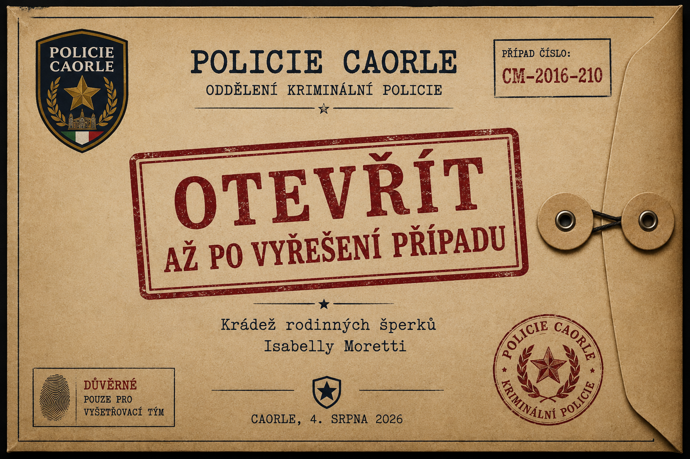
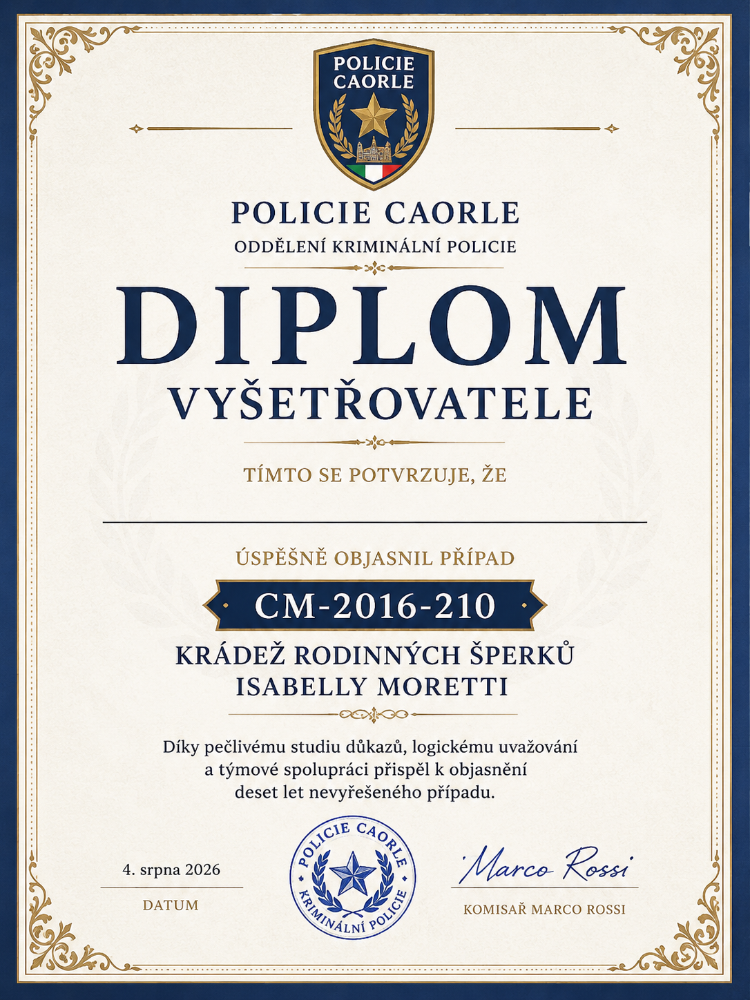

DŮVĚRNÉ — OTEVŘÍT AŽ PO VYŘEŠENÍ
Finále — rozuzlení případu
Tuto stránku (nebo vytištěnou obálku) otevřete s dětmi až poté, co samy označí pachatele a vysvětlí, jak ke krádeži došlo.

Rozhodnutí komisaře o uzavření případu
Na základě nově zajištěných důkazů, opětovného vyhodnocení časové osy, fotodokumentace, forenzní zprávy a výpovědí všech zúčastněných osob bylo prokázáno, že pachatelkou krádeže rodinných šperků byla Hanka Procházková. Její písemné přiznání potvrzuje závěry obnoveného vyšetřování.
Klíčové důkazy: forenzní zpráva z místa činu, rozpis služeb hotelového personálu, zpřesněná časová osa událostí, fotografie F-13 a F-14 s časovými razítky, nález rodinných šperků při rekonstrukci hotelu, dobrovolné přiznání Hanky Procházkové.
„Tímto děkuji novému vyšetřovacímu týmu za pečlivou analýzu všech důkazů. Vaše logické uvažování a schopnost spojit jednotlivé stopy vedly k objasnění případu, který zůstal deset let nevyřešen.“
— Komisař Marco Rossi, Policie Caorle
Závěrečné přiznání Hanky Procházkové
„Nikdy jsem neplánovala nikoho okrást. Když jsem toho večera dokončovala práci ve druhém patře, všimla jsem si pootevřených dveří apartmánu č. 210. Vešla jsem dovnitř, protože jsem si myslela, že hosté ještě neodešli. Na toaletním stolku ležela otevřená šperkovnice. V tu chvíli jsem udělala nejhorší rozhodnutí svého života.
Vzala jsem pouze šperky. Neprohledávala jsem pokoj, nevzala jsem peníze ani jiné cennosti. Měla jsem strach a jednala jsem bez přemýšlení. Šperky jsem ukryla do úklidového vozíku a později je schovala v nepoužívané servisní místnosti hotelu. Nedokázala jsem je prodat ani vrátit.
Chtěla bych se omluvit paní Isabelle Moretti, její rodině i všem lidem, kteří se kvůli mému činu stali podezřelými. Mrzí mě, co jsem způsobila. Přijímám plnou odpovědnost za své jednání.“
— Hanka Procházková, vlastnoruční prohlášení
Diplom malého vyšetřovatele
Na závěr hry vytiskněte a předejte každému dítěti diplom.

Případ CM-2016-210 byl úspěšně vyřešen. Blahopřejeme vašemu vyšetřovacímu týmu!